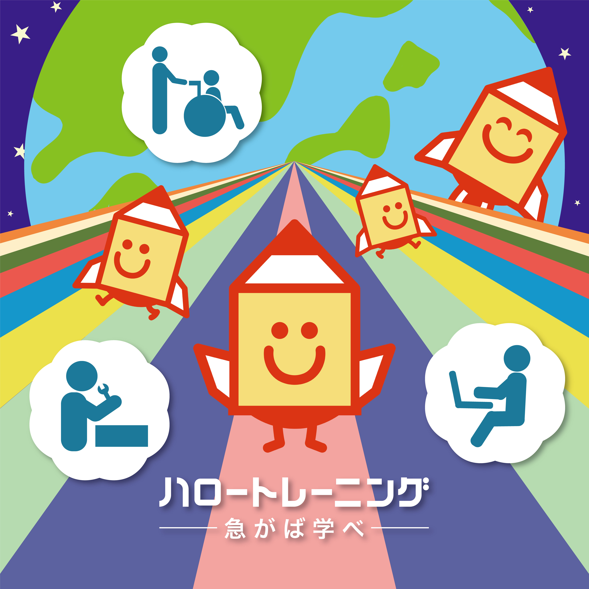
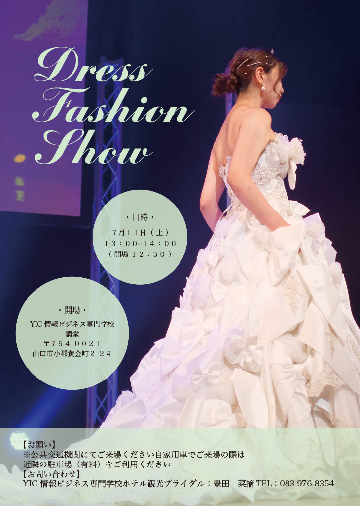
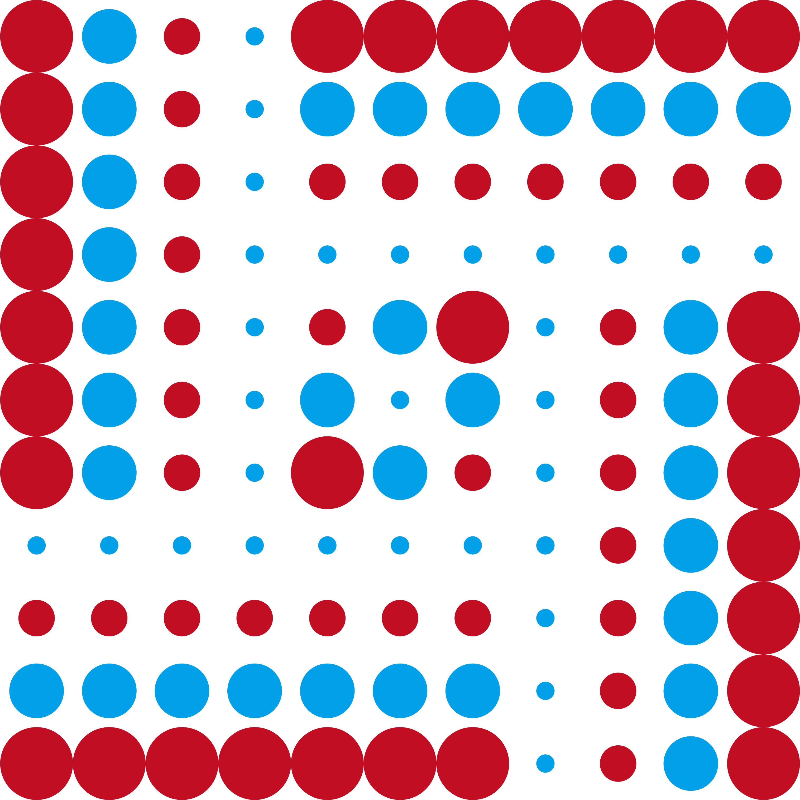
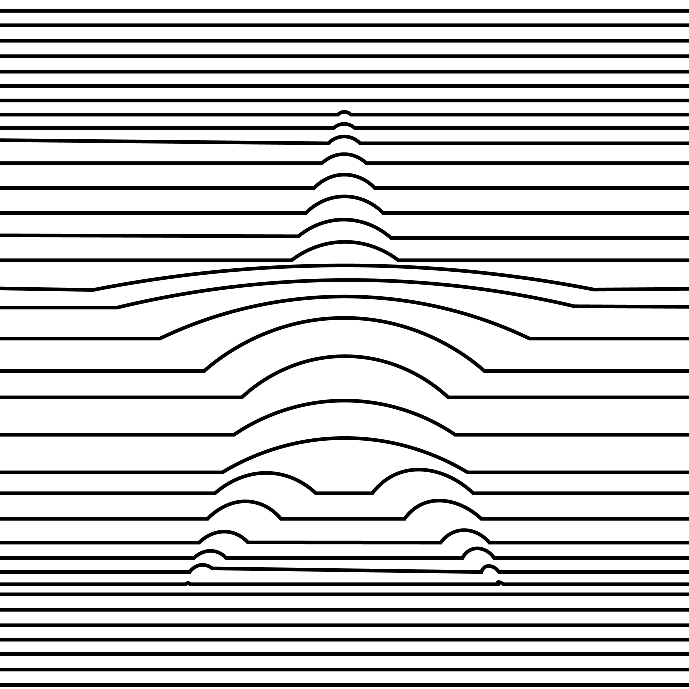

Works
Click on the piece.
「形になる前」採用作品

山口県美容技術コンクール ポスターデザイン 採用
制作時期：2026年
使用ツール：Illustrator
「実るまちで繋がる暮らし」受賞作品

厚生労働省山口労働局ハロートレーニングポスターデザインコンテスト
ハロトレくんと山口県の風景イラスト部門 優秀賞（山口労働局職業安定部長賞）受賞
制作時期：2025年
使用ツール：Illustrator
「どこまでも広がる未来」

厚生労働省山口労働局ハロートレーニングポスターデザインコンテスト
ハロートレーニングポスター部門（応募作品）
制作時期：2026年
使用ツール：Illustrator
「遊鈴」

KOKUYO DESIGN AWARD2026（応募作品）
制作時期：2026年
使用ツール：Illustrator Canva
「時間はここで眠る」

第20回山口県広告大賞（応募作品）
制作時期：2025年 12月
使用ツール：Illustrator
「福のある食事」

Rethink Creative Contest2025（応募作品）
制作時期：2025年 10月
使用ツール：Illustrator
「称号」

第11回痴漢抑止バッジデザインコンテスト（応募作品）
制作時期：2025年 8月
使用ツール：Illustrator

第11回痴漢抑止バッジデザインコンテスト（応募作品）
制作時期：2025年 8月
使用ツール：Illustrator
「残像」

第14回 専門学校生対象 SPRING&SUMMER 2026 Tシャツデザインコンテスト
（応募作品）
制作時期：2025年 8月
使用ツール：Illustrator
「誰だって主役になれる」

YICドレスファッションショー ポスターデザイン（応募作品）
制作時期：2026年 6月
使用ツール：Illustrator
「Pixel Practice」

ピクセルアート（授業制作）
制作時期：2025年 12月
使用ツール：Illustrator
「対照」

平面構成（授業制作）
制作時期：2025年 12月
使用ツール：Illustrator
「Monochrome」

平面構成（授業制作）
制作時期：2025年 12月
使用ツール：Illustrator
「Green」

平面構成（授業制作）
制作時期：2025年 12月
使用ツール：Illustrator
「star」

等高線アート（授業制作）
制作時期：2025年 12月
使用ツール：Illustrator
「ぬいぐるみ用着ぐるみ販売ページ」

Webデザイン（授業制作）
制作時期：2025年 12月
使用ツール：Illustrator
「お茶の魅力をたくさんの人に」

三つ折りパンフレットデザイン（授業制作）
制作時期：2026年 5月
使用ツール：Illustrator
「残しておきたい日」

サムネイルデザイン（授業制作）
制作時期：2025年 12月
使用ツール：Illustrator Photoshop
「プロフィールブック１」

三つ折りプロフィールブックデザイン（個人制作）
制作時期：2025年 11月
使用ツール：Illustrator
「プロフィールブック２」

三つ折りプロフィールブックデザイン（個人制作）
制作時期：2025年 11月
使用ツール：Illustrator
「IDENTITY」
ロゴアイデア（授業制作）
制作時期：2025年 11月
使用ツール：Illustrator
「大切な日を一枚に」

Photoshopコラージュ（授業制作）
制作時期：2025年 11月
使用ツール：Photoshop